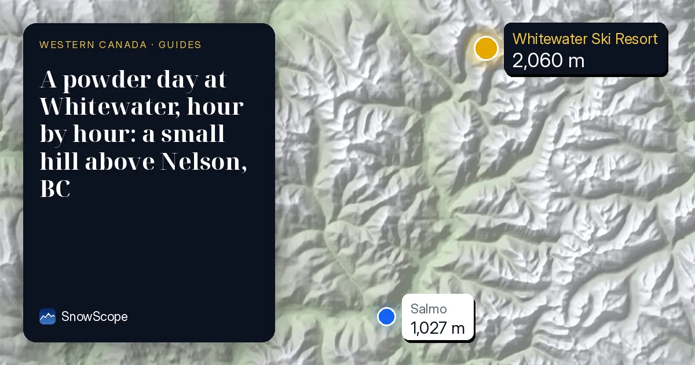
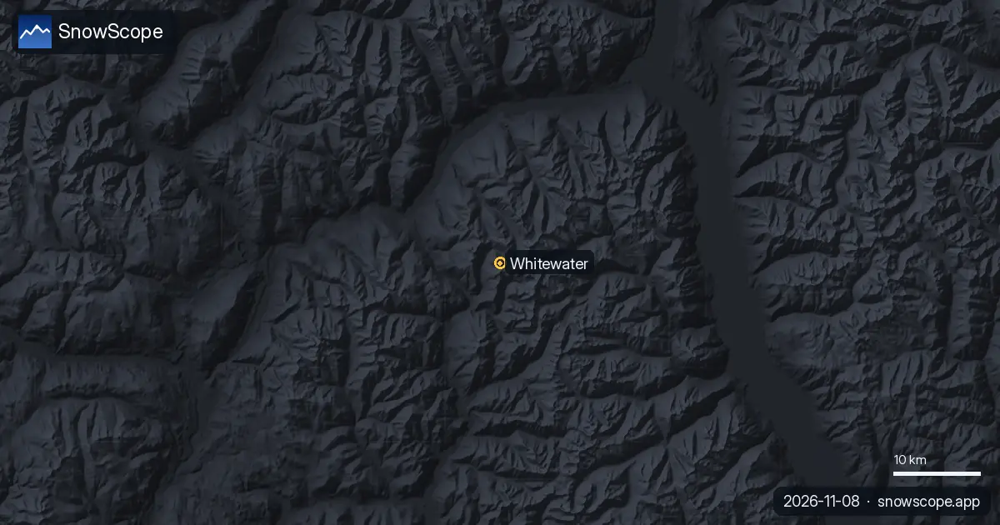

A powder day at Whitewater, hour by hour: a small hill above Nelson, BC
Whitewater is small by design. It sits in a high bowl of the Selkirk Mountains, a short drive from Nelson, and that is exactly why skiers come back. On a snowy morning, you can be first on a powder run before most resorts have opened their lifts. This piece walks through what a storm day looks like here, from the phone call before dawn to the last chair in the afternoon.
See the live snow forecast for Whitewater Ski Resort in the SnowScope appSnow depth, powder alerts and the 3D map, free.

Before 6 am: the overnight check
A powder day begins indoors. You need three things before you leave Nelson: the latest snow forecast, the Avalanche Canada bulletin for the region, and a check on road conditions up from the lake. Big storms bring real avalanche risk, and the access road climbs steeply, so winter tyres are not optional.
The timing of first chair depends on how much snow fell and how stable it is. A quiet night with light new snow is different from a night when the mountains shook with wind. The avalanche forecast tells you which slopes are safe and which are off-limits.

7 am: the 10 km drive from Nelson
Nelson is a lake town on Kootenay Lake's West Arm, and Whitewater lies about 10 km southeast of it, in the Ymir bowl. The road climbs fast from the water, so the drive takes longer in heavy snow than you might think. Visitors from further away often fly into Castlegar, about 43 km southwest.
The road opens early on storm days at this small resort, which runs five lifts from a base of 1,390 m to a top of 2,060 m. By the time you park, the first run should be tracked but not busy.
8 am: snow at three different heights
Whitewater's 670 m of vertical is steep enough that snow depth changes with every 300 m you climb. At the base, 1,390 m, typical winters build a peak of about 136 cm by April, with about 26 cm already on the ground in November. At mid-mountain, 1,725 m, the picture is deeper: a typical peak of 165 cm, and by mid-November about 33 cm has usually fallen.
Higher still, near the top at 2,060 m, the snowpack is richer. The typical season peak is 197 cm, and March and April are the deepest months. This band is where late storms stay light longest, and where visibility tends to be best on powder mornings.
9 am: the trees versus the bowls
About 62 percent of the mountain is rated advanced terrain, and a storm morning forces a choice. The trees hold softer snow and better shelter from wind, while the open bowls can be scoured by the storm itself, especially at the top. On a windy night, what fell on the ridge probably ended up in the lee.
Ski with a partner who stays in sight in the trees, and test the depth with your first few turns before you commit to speed. New snow over hard ground is fast; new snow over weak layering can hide a problem. The trees are kind, but trees have rocks.
Midday: why small hills matter
Whitewater's lodge is not just shelter; it has a reputation for its food that travels beyond the valley. A warm lunch and dry gloves reset your body and your mind. At a five-lift hill, you can eat without feeling you are losing hours to the queue.
By noon the easy lines are tracked, and the wind at the top will have sorted the new snow. This is when you can climb or hike to the edges of the patrolled terrain, where the best powder usually hides.
Afternoon to evening: the season in a day
Whitewater opened in 1976. Over 46 past winters, its snow depth has been stable and deep. At mid-mountain, the median peak in the first fifteen winters was about 157 cm; in the last fifteen it was about 168 cm. Last winter, 2025-26, was slightly below that, at 145 cm. This tells you something: the mountain does not play around with snow.
By late afternoon the light is fading, but the top stays white longer than the lower slopes. If you have energy left, that is where the best untracked snow of the day often waits. By dusk you will be tired, happy and ready for the drive back down to Nelson.
Tips for skiers
- Check the Avalanche Canada forecast before you leave the groomed runs. Storm days mean real hazard.
- Winter tyres for the climb from Nelson; the road is steep and can ice quickly.
- In the trees on a storm morning, ski with a partner in sight. Test depth with early turns.
- Snow on the map does not mean the resort is open. Check the official website and the morning report for lift status.
- Pack dry gloves and eat a warm lunch; small resorts fill the lodge fast on powder days.
About these numbers
Resort snow depths are the deepest snow on the resort's upper slopes on the date shown; they are estimates for an area, not a measurement at one point. Forecasts can change. Always read the official avalanche bulletin before going off-piste.
Official avalanche bulletins: Avalanche Canada
Cite this report
For research, teaching or the press: the numbers and charts are free to reuse under CC BY 4.0 with this citation.
SnowScope (2026), A powder day at Whitewater, hour by hour: a small hill above Nelson, BC, https://snowscope.app/blog/en/2026/11/whitewater-powder-day-hour-by-hour-nelson.html, accessed 2026-11-09
SnowScope (Atlas Labs). (2026, November 9). A powder day at Whitewater, hour by hour: a small hill above Nelson, BC. SnowScope snow reports. https://snowscope.app/blog/en/2026/11/whitewater-powder-day-hour-by-hour-nelson.html
BibTeX
@misc{snowscope2026whitewaterpowderdayhourb,
author = {{SnowScope (Atlas Labs)}},
title = {A powder day at Whitewater, hour by hour: a small hill above Nelson, BC},
year = {2026},
month = nov,
howpublished = {\url{https://snowscope.app/blog/en/2026/11/whitewater-powder-day-hour-by-hour-nelson.html}},
note = {Published 2026-11-09 19:21 UTC; accessed 2026-11-09}
}· CC BY 4.0 · Methods, data and tools →
Whitewater Ski Resort: snow and temperature by height, this winter vs last (tools) →
Follow Whitewater Ski Resort
Free: a message when fresh snow is coming, and the forecast every morning.
More snow reports

Mount Washington holds 145 cm on 8 November, the deepest in Western Canada, but the freezing level will climb above the summit by 11 November.

Western Canada's ski resorts hold snow at 18 percent of early-season norms as of November 3, with Mount Cain leading and lower elevations lagging far behind.

More snow is on the way: by 8 November our forecast gives 94 cm at Whistler Blackcomb, 93 cm at Ski Callaghan and 70 cm at Tweedsmuir Ski Club. Keep …